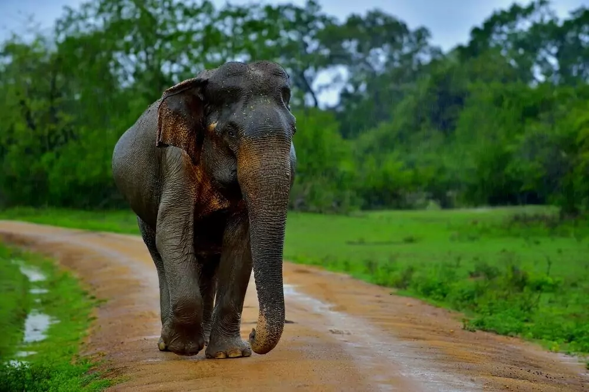
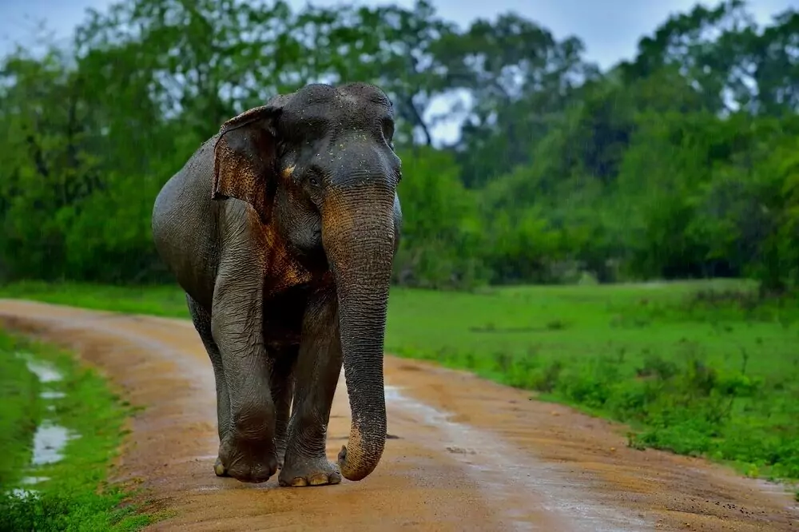
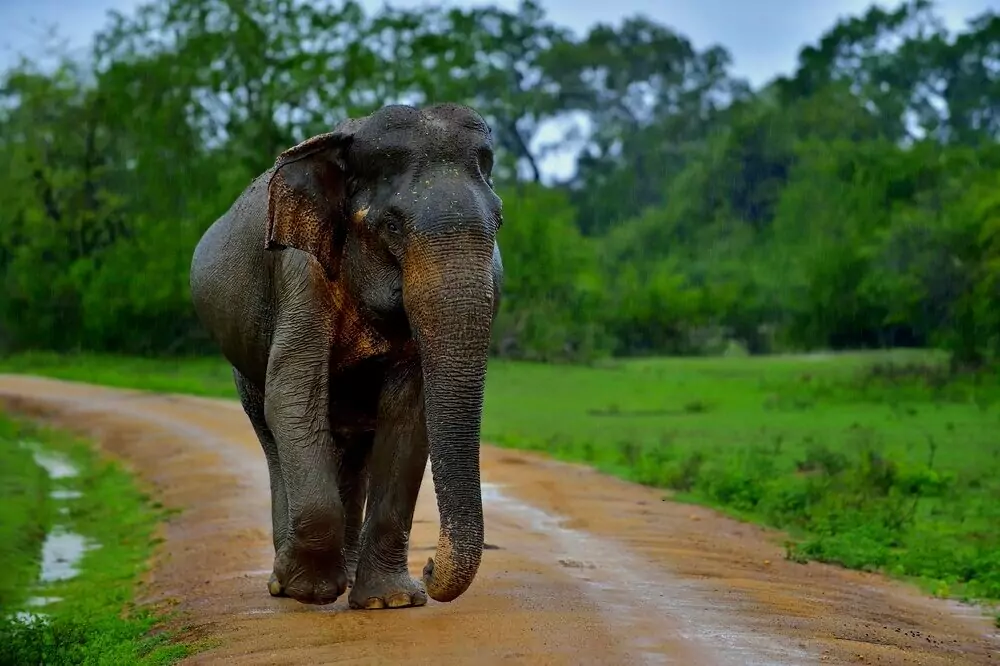
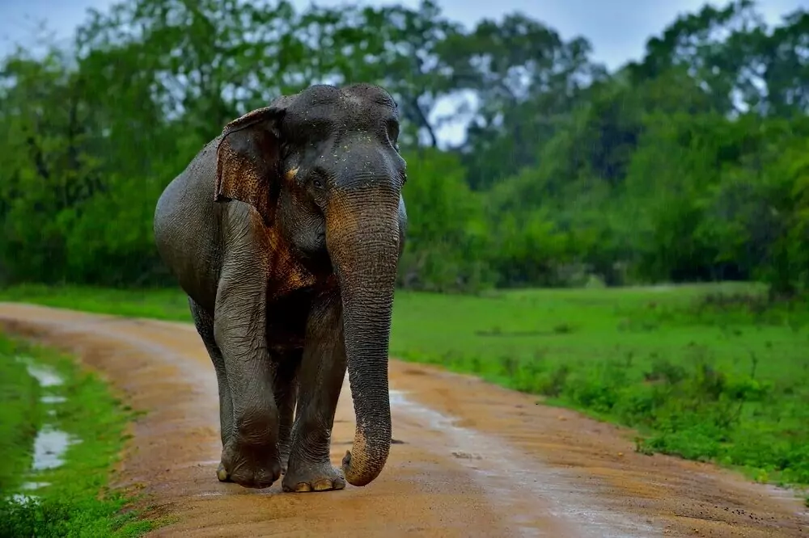

Immerse yourself in the wild wonders of Sri Lanka, from lush jungles with elusive leopards to vibrant birdlife and majestic elephants in national parks. Along the coasts, experience the breathtaking sight of marine turtles under the moonlit sky. Sri Lanka's dedication to conservation is evident in protected areas, making it a paradise for nature enthusiasts. Join us in celebrating the diverse tapestry of life in this enchanting world of Sri Lankan wildlife.
Sinharaja Forest Reserve
Explore Sinharaja Forest Reserve in Sri Lanka, a UNESCO World Heritage Site teeming with unique flora and fauna, including the elusive Sri Lankan leopard and distinctive purple-faced langur monkey. Towering trees and vibrant orchids create a haven for nature enthusiasts, with birdwatchers drawn to endemic species like the captivating Sri Lanka blue magpie. Immerse yourself in the pristine beauty of Sinharaja's rich biodiversity.
| Animal | Fact | Species |
|---|---|---|
| Sri Lankan Leopard | Elusive and critically endangered. | Key predator in Sinharaja, contributing to biodiversity. |
| Sri Lanka Blue Magpie | Endemic bird with striking plumage. | Part of Sinharaja's avian population, 200+ bird species documented. |
| Hump-nosed Lizard | Unique lizard, distinctive nose hump, well-camouflaged. | Contributes to Sinharaja's rich herpetofauna diversity. |
Sri Lankan Leopard
Sri Lanka Blue Magpie
Hump-nosed Lizard
Udawalawe National Park
Explore Udawalawe National Park in southern Sri Lanka, where wilderness meets conservation. Known for its thriving elephant population, the park offers a remarkable safari experience. Witness majestic elephants in their natural habitat, engaging in social activities and bathing in the reservoir. Udawalawe hosts diverse wildlife, including birds and mammals, amidst open grasslands and scenic vistas. A must-visit for an authentic wildlife encounter.
| Animal | Fact | Species |
|---|---|---|
| Asian Elephant | Wild elephants with strong social bonds. | Wild elephants with vocal communication |
| Sri Lankan Sambar Deer | Home to the majestic Sri Lankan Sambar deer. | Males have impressive antlers and vocalize during mating. |
| Sri Lankan Crocodile | Mugger crocodiles in Udawalawe's water bodies. | Crocodiles with a dinosaur lineage inhabit the park. |
Asian Elephant
Sri Lankan Sambar Deer
Sri Lankan Crocodile
Get in Touch:
Quick Links:
.svg)
.svg)

.svg)